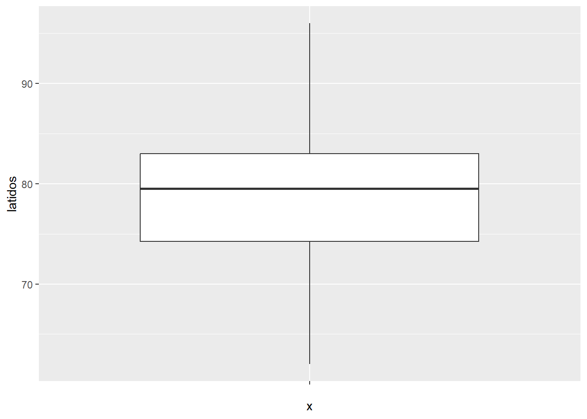

Capítulo 3 Programación
En este capítulo te voy a mostrar las primeras ideas para que puedas programar en R.
3.1 ¿Que significa programar?
Revisa este video (8') y trata de responder:
- ¿Qué habilidades permite desarrollar el conocimiento de programación?
- ¿Qué es un algoritmo?
- ¿Qué es un lenguaje de programación?
3.2 La shell (consola) versus el script
Revisa este video (6') y trata de responder:
- ¿Cuál es la diferencia entre un compilador y un intérprete?
- ¿Cuál es la diferencia entre usar la shell (consola) y usar un script?
- ¿Qué es el CRAN?
3.3 Intro a la programación
Revisa este video (16') para comenzar a trabajar en RStudio. Mas abajo repetiré el mismo contenido para que vayas viendo como usar el material que viene mas abajo. La idea es que vayas trabajando tus propios scripts ordenadamente en tu computador.
3.4 Empezando a programar
En lo que sigue te recomiendo que crees un script (lo nombres "Curso_1" o algo así) y que vayas escribiendo o copiando lo que vamos viendo más abajo. En general, luego de una línea de código aparece el resultado precedido por ##.
En un script es esencial incluir comentarios. De esta manera puedes acordarte (y otros puedes entender) que está haciendo tu código.
Para escribir un comentario debes anteponer un #. En el inicio de un script es un buen hábito poner una fecha y tus iniciales. Por ejemplo:
# JLUF 16/08/2022También es buena idea que agregues una breve descripción de lo que hace tu código.
# JLUF 16/08/2022
# Estadística descriptivaR tiene algunas funciones integradas. Por ejemplo: el promedio (mean) y la desviación estándar (sd). Para probar estas funciones podemos aplicarlas a una series de números (o vector). Para crear un vector podemos usar la c y un paréntesis. Lo que hacemos con la c es concatenar números.
# JLUF 16/08/2022
# Estadística descriptiva
# Promedio entre 2 y 3
mean(c(2,3))## [1] 2.5# Deviación estándar entre 2 y 3
sd(c(2,3))## [1] 0.7071068Comúnmente para hacer un cálculo de manera óptima usamos algo que se llama asignación.
Es decir, creamos una variable y le asignamos un valor.
Por ejemplo, definimos que a equivale a 2 y b equivale a 3.
Luego podemos usar solamente esas variables para hacer cálculos.
Para asignar ponemos una flecha: "<-"
a <- 2
b <- 3
mean(c(a,b))## [1] 2.5También podemos crear variables que contengan texto.
Por ejemplo, podemos crear una lista con los integrantes de Metallica.
metallica <- c("Lars", "James", "Jason", "Kirk")
metallica## [1] "Lars" "James" "Jason" "Kirk"Este es un vector de carácteres. Además, puedes usar las funciones str() y class() para averiguar la naturaleza de estas variables.
class(metallica)## [1] "character"str(metallica)## chr [1:4] "Lars" "James" "Jason" "Kirk"Para inspeccionar cada elemento de esta variable puedes usar el paréntesis cuadrado.
Esto se llama indexar. Por ejemplo, para ver el primer elemento puedes hacer lo siguiente:
metallica[1]## [1] "Lars"O podrías ver desde el primero al segundo.
metallica[1:2]## [1] "Lars" "James"O podrías ver desde el segundo al tercero.
metallica[2:3]## [1] "James" "Jason"Si te das cuenta que tu lista tiene un elemento incorrecto lo puedes eliminar. Para ello debes crear una nueva variable a partir de metallica pero dentro del paréntesis cuadrado usamos una fórmula lógica. La fórmula nos permite seleccionar ciertos elementos. Por ejemplo, si queremos todos los elementos de la variable metallica excepto el elemento Jason (de ahí viene la parte !=) podemos hacer lo siguente:
new_metallica <- metallica[metallica != "Jason"]
new_metallica## [1] "Lars" "James" "Kirk"También puedes eliminar dos elementos indicandole a R que quieres eliminar los elementos del 2 al 3:
metallica_duo <- metallica[-c(2,3)]
metallica_duo## [1] "Lars" "Kirk"Lo que podríamos hacer enseguida es agregar un nuevo elemento.
Para hacer esto concatenamos, usado la c, un variable con otra variable.
Por ejemplo, para concatenar new_metallica con "Rob" hacemos lo siguiente:
last_metallica <- c(new_metallica, "Rob")
last_metallica## [1] "Lars" "James" "Kirk" "Rob"Incluso podríamos elegir dónde agregar a Rob.
Por ejemplo, lo podemos agregar al final.
last_metallica_2 <- c("Rob", new_metallica)
last_metallica_2## [1] "Rob" "Lars" "James" "Kirk"O lo podemos agregar en la penúltima posición:
last_metallica_3 <- c(new_metallica[1:2], "Rob", new_metallica[3])
last_metallica_3## [1] "Lars" "James" "Rob" "Kirk"Ejercicio:
Crea una variable que represente a tu banda favorita.
3.5 Trabajando con data frames
Podemos crear variables de distintos tipos (lista de palabras o listas de números):
metallicaNames <- c("Lars", "James", "Kirk", "Rob")
metallicaNames## [1] "Lars" "James" "Kirk" "Rob"metallicaAges <- c(47, 47, 48, 46)
metallicaAges## [1] 47 47 48 46metallicaColor <- c("Blue", "Red", "Yellow", "Green")
metallicaColor## [1] "Blue" "Red" "Yellow" "Green"Pero más importante que eso es que podemos reunir estas variables en una estructura mas compleja. Esta estructura se llama data frame. Un data frame puede acomodar distintos tipos de datos y los pone en distintas "cajas". Para crear un data frame usamos la función data.frame
metallicaDataFrame <- data.frame(metallicaNames, metallicaAges, metallicaColor)
metallicaDataFrame## metallicaNames metallicaAges metallicaColor
## 1 Lars 47 Blue
## 2 James 47 Red
## 3 Kirk 48 Yellow
## 4 Rob 46 GreenFijate que al crear el data frame el nombre de la variable se vuelve el encabezado de esos datos en el dataframe. Si queremos podemos cambiarle el nombre a estos encabezados. Podemos hacer esto usando la función colnames.
colnames(metallicaDataFrame) <- c("name", "age", "color")
metallicaDataFrame## name age color
## 1 Lars 47 Blue
## 2 James 47 Red
## 3 Kirk 48 Yellow
## 4 Rob 46 GreenO mejor aún puedes definirlo al momento de crear la data frame:
metallicaDataFrame <- data.frame(Name = metallicaNames, Age = metallicaAges, Color = metallicaColor)
metallicaDataFrame## Name Age Color
## 1 Lars 47 Blue
## 2 James 47 Red
## 3 Kirk 48 Yellow
## 4 Rob 46 GreenMira también la estructura de este data frame. Verás que hay 4 observacions y 3 variables. Dos de estas listas son carácteres.
str(metallicaDataFrame)## 'data.frame': 4 obs. of 3 variables:
## $ Name : chr "Lars" "James" "Kirk" "Rob"
## $ Age : num 47 47 48 46
## $ Color: chr "Blue" "Red" "Yellow" "Green"Para mirar cada una de las lista puedes usar el símbolo $
metallicaDataFrame$Name## [1] "Lars" "James" "Kirk" "Rob"metallicaDataFrame$Age## [1] 47 47 48 46metallicaDataFrame$Color## [1] "Blue" "Red" "Yellow" "Green"Además, podemos eliminar una de estas listas si no nos interesa.
metallicaDataFrame$Color <- NULL
metallicaDataFrame## Name Age
## 1 Lars 47
## 2 James 47
## 3 Kirk 48
## 4 Rob 46Mas importante aún es el hecho que podemos hacer cálculos matemáticos de forma masiva. Primero, agreguemos una columna nueva:
metallicaDataFrame$ChildAge <- c(12, 12, 4, 6)
metallicaDataFrame## Name Age ChildAge
## 1 Lars 47 12
## 2 James 47 12
## 3 Kirk 48 4
## 4 Rob 46 6Luego, podemos calcular la diferencia entre estas dos columnas y la asignamos a una nueva columna:
metallicaDataFrame$FatherhoodAge <- metallicaDataFrame$Age - metallicaDataFrame$ChildAge
metallicaDataFrame## Name Age ChildAge FatherhoodAge
## 1 Lars 47 12 35
## 2 James 47 12 35
## 3 Kirk 48 4 44
## 4 Rob 46 6 40Podemos agregar mas datos a partir de otra variable. Y para crear variables podemos concatenar pedazos de datos. Por ejemplo, podríamos querer crear un set de datos de 15 valores que representen 3 condiciones experimentales. Cada condición experimental podría estar repetida 5 veces. Si queremos repetir la condición 1 tres veces hacemos:
rep(1,5)## [1] 1 1 1 1 1El primer parámetro dentro de la función rep es el número que quieres repetir. El segundo parámetro define las veces que se va a definir ese número.
Luego, podemos concatenar repeticiones de distintos números.
vector1 <- c(rep(1,5), rep(2,5), rep(3,5))
vector1## [1] 1 1 1 1 1 2 2 2 2 2 3 3 3 3 3Y eso lo podemos agregar luego en una data frame.
Veamos un ejemplo mas elaborado. Vamos a crear un base de datos sobre el nombre, la fecha de nacimiento y el trabajo de distintas personas. Para que R identifique los números como fechas usamos la función as.Date(por defecto el formato es yyyy-mm-dd).
name <- c("Ben", "Martin","Andy","Paul", "Graham","Carina","Karina","Doug","Mark", "Zoe")
name## [1] "Ben" "Martin" "Andy" "Paul" "Graham" "Carina" "Karina" "Doug" "Mark" "Zoe"birth_date <- as.Date(c("1977-07-03", "1969-05-24", "1973-06-21", "1970-07-16", "1949-10-10", "1983-11-05", "1987-10-08", "1989-09-16", "1973-05-20", "1984-11-12"))
birth_date## [1] "1977-07-03" "1969-05-24" "1973-06-21" "1970-07-16" "1949-10-10" "1983-11-05" "1987-10-08"
## [8] "1989-09-16" "1973-05-20" "1984-11-12"job <- c(rep(1, 5), rep(2, 5)) # que es el equivalente a: job <- c(1,1,1,1,1,2,2,2,2,2)
job## [1] 1 1 1 1 1 2 2 2 2 2La variable job es categórica. El número 1 indica que es un profesor y el 2 indica que es un estudiante. Para R son sólo números. Para decirle a R que es una variable categórica (o en el lenguaje de R un factor) tenemos que indicarselo usando la función factor. Además, podemos crear etiquetas o nombres que nos hagan mas sentido a nosotros. En este caso este factor tiene dos niveles: Lecturer y Student.
job <- factor(job, levels = c(1:2), labels = c("Lecturer", "Student"))
job## [1] Lecturer Lecturer Lecturer Lecturer Lecturer Student Student Student Student Student
## Levels: Lecturer StudentLuego, el paso final es poner todo junto:
dataframe1 <- data.frame(name, birth_date, job)
dataframe1## name birth_date job
## 1 Ben 1977-07-03 Lecturer
## 2 Martin 1969-05-24 Lecturer
## 3 Andy 1973-06-21 Lecturer
## 4 Paul 1970-07-16 Lecturer
## 5 Graham 1949-10-10 Lecturer
## 6 Carina 1983-11-05 Student
## 7 Karina 1987-10-08 Student
## 8 Doug 1989-09-16 Student
## 9 Mark 1973-05-20 Student
## 10 Zoe 1984-11-12 StudentEjercicio:
Crea una data frame con los integrantes de tu grupo familiar o de tu curso.
En tu data frame agrega el nombre, apellido y la edad.
3.6 Importando datos
La mayoría del tiempo vas a importar más que crear datos. Para ello cuando trabajes en R debes decirle en que carpeta de tu computador están esos archivos. Es decir, debes definir tu directorio de trabajo con la función setwd
Por ejemplo, para mí sería algo así: setwd("C:/Users/Usuario/Documents/JoseLuis/UTalca_2018/Stats_UTalca/database_2020_DocPsychol")
La función getwd() (sin nada entre paréntesis) te permite sabes cual es tu directorio actual.
getwd()## [1] "C:/Users/Usuario/Documents/JoseLuis/UTalca_2018/Estadistica_Bookdown/estadistica"Para importar datos puedes usar distintas funciones. Por ejemplo, para importar datos de tipo .txt debemos usar la función read.delim
setwd("C:/Users/Usuario/Documents/JoseLuis/UTalca_2018/Estadistica_Bookdown/estadistica")
dat <- read.delim(file = "data/facebook_friends_1.txt")
dat## X108
## 1 103
## 2 252
## 3 121
## 4 93
## 5 57
## 6 40
## 7 53
## 8 22
## 9 116
## 10 98Si ejecutas este comando en tu computador y lo comparas con los datos originales te darás cuenta que hay un error. Cuando importate tus datos a R perdiste el 108. Esto occurre porque por defecto esta función asume que tus datos tienen un encabezado (el "header"). Es decir, el parámetro llamado "header" esta fijado en "TRUE"", que significa que la función espera un encabezado. Para corregir esto debes explícitamente decirle a R que no hay header, así:
setwd("C:/Users/Usuario/Documents/JoseLuis/UTalca_2018/Estadistica_Bookdown/estadistica")
dat <- read.delim(file = "data/facebook_friends_1.txt", header = FALSE)
dat## V1
## 1 108
## 2 103
## 3 252
## 4 121
## 5 93
## 6 57
## 7 40
## 8 53
## 9 22
## 10 116
## 11 98Fijate ahora que R le asigna un nombre a tu columna (V1). Es buena práctica ponerme un nombre a tu columna que haga sentido. Por ejemplo, podemos llamarla "friends":
colnames(dat) <- c("friends")
dat## friends
## 1 108
## 2 103
## 3 252
## 4 121
## 5 93
## 6 57
## 7 40
## 8 53
## 9 22
## 10 116
## 11 98Cuando tus datos ya tienen un encabezado te ahorras estos problemas. Fjate que para importar este otro archivo no necesitas definir que el header a FALSE.
setwd("C:/Users/Usuario/Documents/JoseLuis/UTalca_2018/Estadistica_Bookdown/estadistica")
dat <- read.delim(file = "data/facebook_friends_2.txt")
dat## AMIGOS
## 1 108
## 2 103
## 3 252
## 4 121
## 5 93
## 6 57
## 7 40
## 8 53
## 9 22
## 10 116
## 11 98Típicamente vas a importar que has registrado en archivos de tipo Excel (.xls o .xlsx). El archivo Excel se puede transformar en un archivo de tipo csv. Este arhivo csv se importa de la siguiente manera:
setwd("C:/Users/Usuario/Documents/JoseLuis/UTalca_2018/Estadistica_Bookdown/estadistica")
dat2 <- read.csv("data/facebook_friends_1.csv", header = FALSE)
dat2## V1
## 1 108
## 2 103
## 3 252
## 4 121
## 5 93
## 6 57
## 7 40
## 8 53
## 9 22
## 10 116
## 11 98Para importar archivos siempre asegurate que has seteado bien tu directorio de trabajo y que los archivos están ahí.
Ejercicio:
Trata de importar algún archivo csv a tu sesión de R.
3.7 Seleccionando datos
Una vez que tienes datos en tu espacio de trabajo en R la idea es que puedas manipular esos datos. Uno de los aspectos fundamentales de esta manipulación es la selección de datos. Primero, importemos alguna base de datos.
setwd("C:/Users/Usuario/Documents/JoseLuis/UTalca_2018/Estadistica_Bookdown/estadistica")
lecturerDat <- read.csv("data/lecturer_data.csv")
lecturerDat## name birth_date job friends alcohol income neurotic
## 1 Ben 07/03/1977 1 5 10 20000 10
## 2 Martin 5/24/1969 1 2 15 40000 17
## 3 Andy 6/21/1973 1 0 20 35000 14
## 4 Paul 7/16/1970 1 4 5 22000 13
## 5 Graham 10/10/1949 1 1 30 50000 21
## 6 Carina 11/05/1983 2 10 25 5000 7
## 7 Karina 10/08/1987 2 12 20 100 13
## 8 Doug 1/23/1989 2 15 16 3000 9
## 9 Mark 5/20/1973 2 12 17 10000 14
## 10 Zoe 11/12/1984 2 17 18 10 13Antes de proceder vamos a transformar la variable "job" a factor, y vamos a crear rótulos que nos hagan mas sentido. Esto lo podemos hacer porque sabemos que el rótulo 1 corresponde a "Lecturer" y el rótulo 2 corresponde a "Student".
lecturerDat$job <- factor(lecturerDat$job,
levels = c(1:2),
labels = c("Lecturer", "Student"))
lecturerDat## name birth_date job friends alcohol income neurotic
## 1 Ben 07/03/1977 Lecturer 5 10 20000 10
## 2 Martin 5/24/1969 Lecturer 2 15 40000 17
## 3 Andy 6/21/1973 Lecturer 0 20 35000 14
## 4 Paul 7/16/1970 Lecturer 4 5 22000 13
## 5 Graham 10/10/1949 Lecturer 1 30 50000 21
## 6 Carina 11/05/1983 Student 10 25 5000 7
## 7 Karina 10/08/1987 Student 12 20 100 13
## 8 Doug 1/23/1989 Student 15 16 3000 9
## 9 Mark 5/20/1973 Student 12 17 10000 14
## 10 Zoe 11/12/1984 Student 17 18 10 13Ahora, imagina que quieres seleccionar datos de aquellos participantes que eran sólo "Lecturer". Podemos seleccionar esos datos y asignarlos a una nueva variable, así:
onlyLecturer <- lecturerDat[lecturerDat$job == "Lecturer",]
onlyLecturer## name birth_date job friends alcohol income neurotic
## 1 Ben 07/03/1977 Lecturer 5 10 20000 10
## 2 Martin 5/24/1969 Lecturer 2 15 40000 17
## 3 Andy 6/21/1973 Lecturer 0 20 35000 14
## 4 Paul 7/16/1970 Lecturer 4 5 22000 13
## 5 Graham 10/10/1949 Lecturer 1 30 50000 21Ahora, imagina que quieres seleccionar datos de aquellos participantes cuyo nivel de alcohol es menor o igual a 15:
lightAlcoholics <- lecturerDat[lecturerDat$alcohol <= 15,]
lightAlcoholics## name birth_date job friends alcohol income neurotic
## 1 Ben 07/03/1977 Lecturer 5 10 20000 10
## 2 Martin 5/24/1969 Lecturer 2 15 40000 17
## 4 Paul 7/16/1970 Lecturer 4 5 22000 13Lo que acabas de hacer es seleccionar sólo algunas filas. Algo que también puedes realizar es seleccionar sólo algunas columnas. Por ejemplo, podrías seleccionar sólo aquellos datos relacionados con las columnas "friends", "alcohol" y "neurotic". Para ello puedes hacer:
lecturerPersonality <- lecturerDat[, c("friends", "alcohol", "neurotic")]
lecturerPersonality## friends alcohol neurotic
## 1 5 10 10
## 2 2 15 17
## 3 0 20 14
## 4 4 5 13
## 5 1 30 21
## 6 10 25 7
## 7 12 20 13
## 8 15 16 9
## 9 12 17 14
## 10 17 18 13Incluso puedes combinar la selección de filas y de columnas. Por ejemplo podrías seleccionar las columnas "friends", "alcohol" y "neurotic" de aquello participantes cuyo nivel de alcohol es menor o igual a 15:
lightAlcoholicsPerso <- lecturerDat[lecturerDat$alcohol <= 15, c("friends", "alcohol", "neurotic")]
lightAlcoholicsPerso## friends alcohol neurotic
## 1 5 10 10
## 2 2 15 17
## 4 4 5 133.8 Transformado datos en formato long a wide y viceversa
Otro aspecto muy importante que debes entender es como transformar de un formato a otro en R. En R hay dos formatos típicos. Cuando hay múltiples mediciones de un mismo sujeto, por ejemplo, a lo largo del tiempo o cuando se realizan distintas mediciones los datos a menudo se anotan en formato wide. En un formato wide la data frame contiene valores que no se repiten en la primera columna. En un formato long la data frame contiene valores que se repiten en la primera columna. Por ejemplo, importemos un set de datos que está en formato wide:
setwd("C:/Users/Usuario/Documents/JoseLuis/UTalca_2018/Estadistica_Bookdown/estadistica")
satisfactionData <- read.csv("data/Honeymoon_Period.csv")
head(satisfactionData)## Person Satisfaction_Base Satisfaction_6_Months Satisfaction_12_Months Satisfaction_18_Months
## 1 1 6 6 5 2
## 2 2 7 7 8 4
## 3 3 4 6 2 2
## 4 4 6 9 4 1
## 5 5 6 7 6 6
## 6 6 5 10 4 2
## Gender
## 1 0
## 2 1
## 3 1
## 4 0
## 5 0
## 6 1Con head miramos sólo los primeras 6 filas de la base de datos. En esta data frame están los niveles de satisfacción con la pareja al momento de casarse, y luego de 6, 12 y 18 meses. Además está el género del entrevistado.
Esta data frame la podemos a transformar a un formato long usando la función stack. Esta función la usamos de la siguiente manera: newDataFrame <- stack(oldDataFrame, select = c(variable_list))
En nuestro ejemplo podemos hacerlo así:
satisfactionStacked <- stack(satisfactionData,
select = c("Satisfaction_Base",
"Satisfaction_6_Months",
"Satisfaction_12_Months",
"Satisfaction_18_Months"))
colnames(satisfactionStacked) <- c("Values", "SatisfType") # cambiamos los encabezados
head(satisfactionStacked)## Values SatisfType
## 1 6 Satisfaction_Base
## 2 7 Satisfaction_Base
## 3 4 Satisfaction_Base
## 4 6 Satisfaction_Base
## 5 6 Satisfaction_Base
## 6 5 Satisfaction_BaseEn esta data frame se puede ver que los valores de satisfacción se ubican en una columna y la condición se ubica en otra columna. El problema con esta transformación es que perdemos la información de género y el número de la persona. Más adelante veremos una manera de hacer esta transformación sin perder esta información.
Esta data frame la podemos reconvertir en formato wide con la función unstack. Esta función la usamos de la siguiente manera: newDataFrame <- unstack(oldDataFrame, scores ~ columns) O simplemente: newDataFrame <- unstack(oldDataFrame)
En nuestro ejemplo podemos hacerlo así:
satisfactionUnstacked <- unstack(satisfactionStacked)
head(satisfactionUnstacked)## Satisfaction_Base Satisfaction_6_Months Satisfaction_12_Months Satisfaction_18_Months
## 1 6 6 5 2
## 2 7 7 8 4
## 3 4 6 2 2
## 4 6 9 4 1
## 5 6 7 6 6
## 6 5 10 4 2satisfactionUnstacked2 <- unstack(satisfactionStacked,
Values ~ SatisfType)
head(satisfactionUnstacked2)## Satisfaction_Base Satisfaction_6_Months Satisfaction_12_Months Satisfaction_18_Months
## 1 6 6 5 2
## 2 7 7 8 4
## 3 4 6 2 2
## 4 6 9 4 1
## 5 6 7 6 6
## 6 5 10 4 2Otra manera de transformar datos a formato long es usando la función melt. Para ello necesitamos cargar la librería reshape.
Esta función la usamos de la siguiente manera: newDataFrame <- melt(oldDataFrame, id = c(constant_variables), measured = c(variables_that_change_across_columns))
En nuestro ejemplo podemos hacerlo así:
library(reshape)
restructuredData <- melt(satisfactionData,
id = c("Person", "Gender"),
measured = c("Satisfaction_Base",
"Satisfaction_6_Months",
"Satisfaction_12_Months",
"Satisfaction_18_Months"))
colnames(restructuredData)[3:4] <- c("SatisfType", "Values") # cambiamos los encabezados
head(restructuredData)## Person Gender SatisfType Values
## 1 1 0 Satisfaction_Base 6
## 2 2 1 Satisfaction_Base 7
## 3 3 1 Satisfaction_Base 4
## 4 4 0 Satisfaction_Base 6
## 5 5 0 Satisfaction_Base 6
## 6 6 1 Satisfaction_Base 5Bonus.También podemos aprovechar de reordenar los datos. Para ello usamos la función order.
reorder2 <- restructuredData[order(restructuredData$Person),]
head(reorder2)## Person Gender SatisfType Values
## 1 1 0 Satisfaction_Base 6
## 116 1 0 Satisfaction_6_Months 6
## 231 1 0 Satisfaction_12_Months 5
## 346 1 0 Satisfaction_18_Months 2
## 2 2 1 Satisfaction_Base 7
## 117 2 1 Satisfaction_6_Months 7En esta data frame se puede ver que los valores de satisfacción se ubican en una columna y la condición se ubica en otra columna. La ventaja de melt es que conserva la información de género y el número de la persona.
Por último, esta data frame la podemos reconvertir en formato wide con la función cast. Esta función la usamos de la siguiente manera: newData <- cast(longData, variables_coded_within_a_single_column ~ variables_coded_across_many_columns, value = "outcome_variable")
En nuestro ejemplo podemos hacerlo así:
wideData <- cast(restructuredData, Person + Gender ~ SatisfType, value = "Values")
head(wideData)## Person Gender Satisfaction_Base Satisfaction_6_Months Satisfaction_12_Months
## 1 1 0 6 6 5
## 2 2 1 7 7 8
## 3 3 1 4 6 2
## 4 4 0 6 9 4
## 5 5 0 6 7 6
## 6 6 1 5 10 4
## Satisfaction_18_Months
## 1 2
## 2 4
## 3 2
## 4 1
## 5 6
## 6 23.9 Exportando datos
Finalmente podrías querer exportar estos datos seleccionados. Para ello puede crear archivos de tipo txt o csv aplicado algunas funciones. Los archivos se crearán en tu actual directorio (para saber cual es puedes hacer getwd())
write.table(lightAlcoholics, "datoExportado.txt", sep="\t")
write.csv(lightAlcoholics, "datoExportado.csv")3.10 En la práctica
Veamos que información podemos sacar de datos que importamos.
setwd("C:/Users/Usuario/Documents/JoseLuis/UTalca_2018/Estadistica_Bookdown/estadistica")
library(ggplot2)Primero importemos datos.
dat <- read.csv("data/latidos_cardiacos.csv", header = TRUE) # load dataLuego calculemos algunos estadísticos.
mean(dat$latidos)## [1] 79.08sd(dat$latidos)## [1] 7.674075Y hagamos algunos gráficos (más de esto luego).
h1 <- ggplot(dat, aes(latidos))
h1 + geom_histogram()## `stat_bin()` using `bins = 30`. Pick better value with `binwidth`.
h1 <- ggplot(dat, aes("", latidos))
h1 + geom_boxplot()
Veámos otros datos.
dat <- read.csv("data/demografia_salud.csv", header = TRUE) # load datatable(dat$Sexo)##
## Hombre Mujer
## 24 16table(dat$Estado.Civil)##
## Casado Divorciado Soltero Viudo
## 24 6 6 4mean(dat$Número.de.hijos)## [1] 1.475sd(dat$Número.de.hijos)## [1] 1.154423min(dat$Peso)## [1] 58max(dat$Peso)## [1] 89dat$Altura <- as.numeric(gsub(",", ".", dat$Altura))
aggregate(Altura ~ Sexo, data = dat, mean)## Sexo Altura
## 1 Hombre 1.703333
## 2 Mujer 1.646875aggregate(Altura ~ Sexo, data = dat, sd)## Sexo Altura
## 1 Hombre 0.07653738
## 2 Mujer 0.06279265dat$PA.Min <- dat$Pr.Arter.Máx
dat$PA.Max <- dat$Pr.Arter.Mín
aggregate(PA.Max ~ Estado.Civil, data = dat, mean)## Estado.Civil PA.Max
## 1 Casado 141.7917
## 2 Divorciado 137.1667
## 3 Soltero 142.0000
## 4 Viudo 144.2500aggregate(PA.Max ~ Estado.Civil, data = dat, sd)## Estado.Civil PA.Max
## 1 Casado 9.002315
## 2 Divorciado 10.553041
## 3 Soltero 6.000000
## 4 Viudo 7.675719